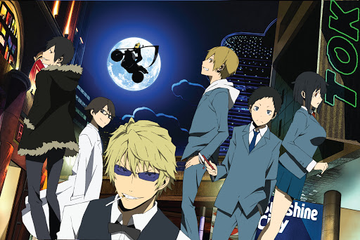

O que é o Dollars? ...
Na história do anime durarara existe uma gangue anônima da internet que se intitula "Dollars", uma gangue que era suposto ajudar o mundo a se tornar um lugar melhor através de boas ações na comunidade e tambem dizendo ser uma guangue "sem cor", onde os membros faziam parte de um fórum anônimo na web. Os personagens do anime frequentava um chat online e também anônimo ( ou não tão anonimo não é mesmo? rs).
Baseado no Fórum e no chat do anime, foram criados na vidas reais fóruns Dollars e chats Drrr que imitavam o do anime. O fórum mais conhecido pela comunidade internacional hoje é o DOLLARS BBS, no qual a senha claro é a mesma vista no Durarara e referenciando um outro anime aí. O chat mais conhecido mudou, pois passou a ser permitido apenas para usuários no japão e hoje vem a ser esse aqui >Chat drrr ( Saudades de tudo que foi vivido no antigo drrrchat).
E claro o Brasil não ficou pra trás criando assim também um Fórum Dollars Brasil, o famoso Dollars do Joaozinho (Que deixou de existir a uns anos ...), e alguns grupos com nomes no mesmo tipo que "Cachecois amarelos" "quadrados azuis" mas o chat usado era o mesmo que a comunidade ao redor do mundo usava, e hoje o chat atual usado pela comunidade mudou mas é o citado lá em cima. A história do primeiro fórum Dollars Brasil estará resumida em algum lugar por aqui ;)
Seguinte a onda de criação de fóruns e chat que se pareciam com o do anime, alguns outros chats criados por fãs, mas não tão parecidos com o do anime foram criados também, e lá o convivio da comunidade brasileira com o tempo veio a acontecer, levanda a criação de grupos ou oque alguns preferem chamar de "panelinha" que por tempos foram movimentados e hoje já não são mais frequentados pela comunidade brasileira, pois ficou "ultrapassado" quando a maioria cresceu, entrou na faculdade, arrumou emprego ... Quando os frequentadores cresceram por assim dizer. Segue nome apenas (para os que nao existem mais) e link dos chats paralelos que foram criados por fã e ainda existem (alguns estão 100% vazios):
Histórias que o povo conta